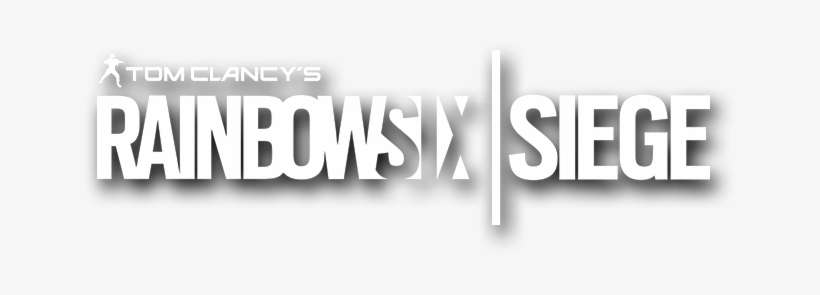
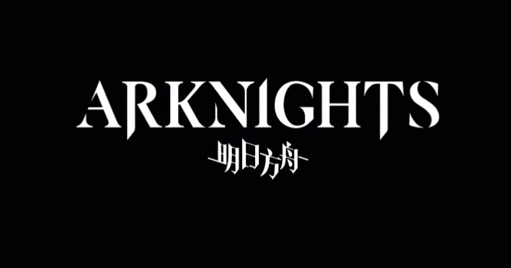
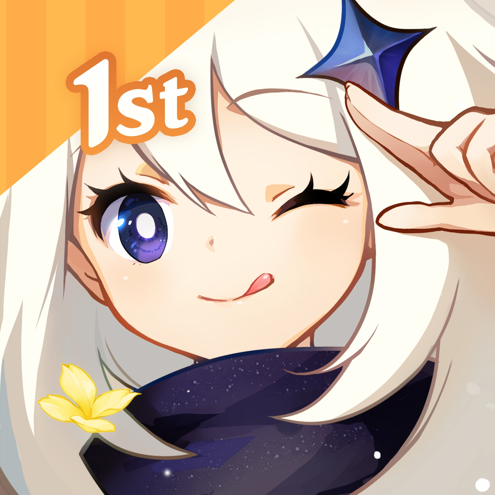

 Tom Clancy's Rainbow Six Siege
Tom Clancy's Rainbow Six Siege adalah permainan video penembak taktis online yang dikembangkan oleh Ubisoft Montreal dan diterbitkan oleh Ubisoft. Ini dirilis di seluruh dunia untuk Microsoft Windows, PlayStation 4, dan Xbox One pada tanggal 1 Desember 2015; permainan ini juga dirilis untuk PlayStation 5 dan Xbox Series X/S tepat lima tahun kemudian pada tanggal 1 Desember 2020. Permainan ini sangat menekankan pada perusakan lingkungan dan kerja sama antar pemain. Setiap pemain memegang kendali atas penyerang atau bertahan dalam mode permainan yang berbeda seperti menyelamatkan sandera, menjinakkan bom, dan mengambil kendali tujuan di dalam ruangan. Judul tidak memiliki campaign tetapi menampilkan serangkaian misi offline pendek yang disebut, "situations" yang bisa dimainkan solo. Misi-misi ini memiliki narasi yang longgar, berfokus pada rekrutan melalui pelatihan untuk mempersiapkan mereka menghadapi pertemuan di masa depan dengan "White Masks", sebuah kelompok teroris yang mengancam keselamatan dunia.
 Arknights
Arknights adalah game seluler menara pertahanan gratis yang dikembangkan oleh pengembang Cina Studio Montagne dan Hypergryph. Ini dirilis di Cina pada 1 Mei 2019, di negara lain pada 16 Januari 2020 dan di Taiwan pada 29 Juni 2020. Arknights tersedia di platform iOS dan Android dan menampilkan mekanisme permainan gacha. Gameplay inti adalah permainan menara pertahanan, dengan sejumlah karakter ("operator") sebagai menara. Operator jarak dekat dapat ditempatkan di ubin tanah dan operator jarak jauh di ubin yang ditinggikan. Operator jarak dekat secara fisik memblokir musuh agar tidak maju, dan operator jarak jauh menangani kerusakan jarak jauh, menyembuhkan atau mendukung operator jarak dekat. Pemain harus menempatkan operator di ubin yang benar untuk mencegah musuh menyusup ke markas pemain. Karena seringkali ada sejumlah solusi yang layak, terutama pada kesulitan tinggi, Arknights juga digambarkan sebagai permainan puzzle. Saat pemain maju melalui permainan, mereka membuka lebih banyak tahapan, operator, dan sumber daya, dan juga diperkenalkan ke jenis musuh dan mekanisme permainan baru. Level yang telah diselesaikan dengan peringkat bintang tiga dapat diselesaikan secara otomatis tanpa masukan pemain, karena permainan merekam tindakan pemain dan mereplikasinya. Game ini juga memiliki aspek pembangunan dasar, yang memungkinkan pemain membangun fasilitas dan menugaskan operator kepada mereka. Hal ini memungkinkan pemain untuk meningkatkan sumber daya mereka dengan cara permainan tambahan. Ini menampilkan serangkaian mekanisme permainan gacha yang gratis untuk dimainkan, seperti hadiah login harian dan akuisisi karakter secara acak melalui mata uang virtual yang dapat diperoleh dengan memainkan game, melalui acara waktu terbatas, atau pembelian dalam aplikasi opsional menggunakan mata uang nyata.
 Genshin Impact
Genshin Impacts adalah permainan free-to-play action RPG dunia terbuka yang dikembangkan oleh miHoYo. Game ini dirilis pada tanggal 28 September 2020 di platform Android, iOS, Windows, dan PlayStation 4, serta 28 April 2021 di platform PlayStation 5. Di dalam game dunia terbuka ini, pemain dapat dengan bebas memanjat, berenang, terbang, dan meluncur untuk menjelajah berbagai jenis area di dunia. Dalam pertarungan, pemain dapat mengendalikan tim yang terdiri dari 4 karakter, dan seiring dengan jalannya kisah di dalam game, pemain dapat membuka sampai 30 karakter. Setiap karakter memiliki dua jenis skill, Basic Skill dan Ultimate, Basic Skill dapat terus digunakan selama skill tersebut tidak dalam cooldown, sedangkan skill Ultimate dapat digunakan setelah Elemental Energy terkumpul.
 Valorant
Valorant
Valorant adalah penembak pahlawan orang pertama taktis multipemain gratis untuk dimainkan yang dikembangkan dan diterbitkan oleh Riot Games, untuk Microsoft Windows. Pertama kali menggoda dengan nama kode Project A pada Oktober 2019, permaian memulai periode beta tertutup dengan akses terbatas pada 7 April 2020, diikuti dengan perilisan resmi pada 2 Juni 2020. Pengembangan permainan dimulai pada 2014. Valorant adalah penembak taktis berbasis tim dan penembak orang pertama yang diatur dalam dekat masa depan. Pemain bermain sebagai salah satu dari sekumpulan agen, karakter yang dirancang berdasarkan beberapa negara dan budaya di seluruh dunia. Dalam mode permainan utama, pemain ditugaskan ke tim menyerang atau bertahan dengan masing-masing tim memiliki lima pemain di dalamnya. Agen memiliki kemampuan unik, masing-masing membutuhkan biaya, serta kemampuan akhir unik yang membutuhkan pengisian melalui pembunuhan, kematian, atau aksi spike. Setiap pemain memulai setiap putaran dengan pistol "classic" dan satu atau lebih muatan "kemampuan khas". Senjata dan biaya kemampuan lainnya dapat dibeli menggunakan sistem ekonomi dalam permainan yang memberikan uang berdasarkan hasil putaran sebelumnya, pembunuhan apa pun yang menjadi tanggung jawab pemain, dan tindakan apa pun yang diambil dengan spike. Agen yang berbeda memungkinkan pemain menemukan lebih banyak cara untuk memasang Spike dan gaya pada musuh dengan scrappers, ahli strategi, dan pemburu dari setiap deskripsi. Saat ini menawarkan 15 agen untuk dipilih. Mereka adalah Brimstone, Phoenix, Sage, Sova, Viper, Cypher, Reyna, Killjoy, Breach, Omen, Jett, Raze, Skye, Yoru, dan Astra.
 Counter Strike Global Offensive
Counter Strike Global Offensive
CSGO adalah sebuah permainan dengan mode FPS yang dikembangkan oleh Valve Corporation dan Hidden Path Entertainment. Kedua perusahaan ini juga merupakan perusahaan yang mengembangkan Counter Strike: Source. Counter Strike: GO merupakan permainan keempat di dalam waralaba Counter Strike, tidak termasuk Counter Strike Neo dan Online. Counter Strike Global Offensive dirilis pada tanggal 21 Agustus, 2012 dan dapat dimainkan pada Microsoft Windows, OS X, Xbox Live Arcade dan Playstation Network versi Amerika. Counter Strike: Global Offensive menampilkan fitur-fitur klasiknya berupa peta yang ada dalam versi sebelumnya dan beberapa peta baru serta karakter tambahan. Permainan ini dapat dimainkan dengan menggunakan beberapa platform yang berbeda yaitu Windows, OS X dan PSN. Seperti halnya dalam versi-versi sebelumnya, Counter Strike: Global Offensive merupakan permainan dengan menggunakan sudut pandang orang pertama. Permainan ini didesain dengan menjadikan pemain sebagai penembak. Pemain dapat bergabung ke dalam kelompok Teroris ataupun Anti-Teroris di mana pemain diharuskan untuk menyelesaikan beberapa misi ataupun melenyapkan kelompok musuh. Permainan ini berlangsung dalam ronde yang pendek dan berakhir apabila pemain terkalahkan ataupun misi telah diselesaikan. Dalam kebanyakan mode permainan, seorang pemain yang kalah harus menunggu sampai ronde permainan selesai untuk dapat berpartisipasi kembali. Dalam permainan ini, pemain dapat membeli senjata dan perlengkapan lainnya pada permulaan dengan menggunakan uang yang didapat berdasarkan performa penyelesaian misi. Selain uang yang diberikan apabila pemain menyelesaikan misi atau mengalahkan musuh, terdapat juga sistem pengurangan uang apabila pemain melakukan kesalahan seperti membunuh sandera atau teman satu tim. Sebagai tambahan, setiap pemain mendapatkan hadiah uang setiap ronde yang selesai dan tim yang menang akan mendapatkan uang dengan jumlah yang lebih banyak.